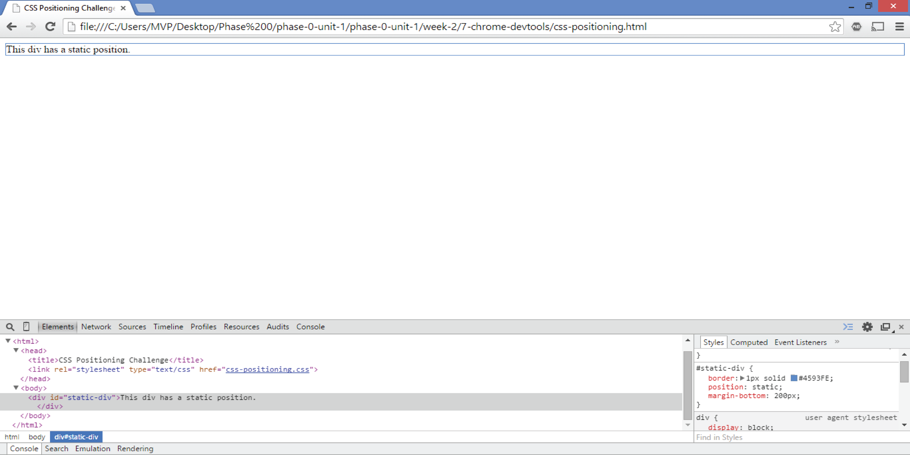
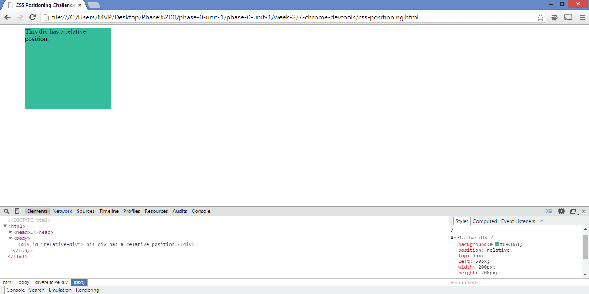
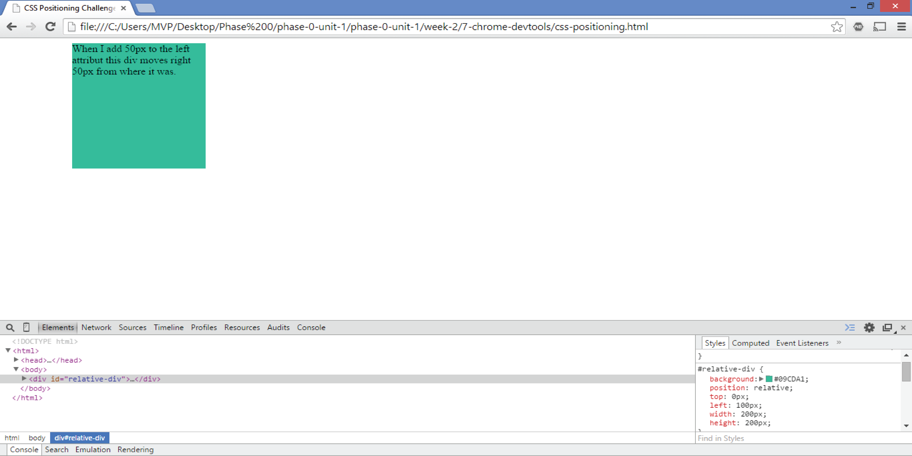
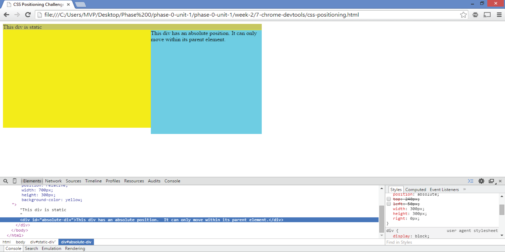
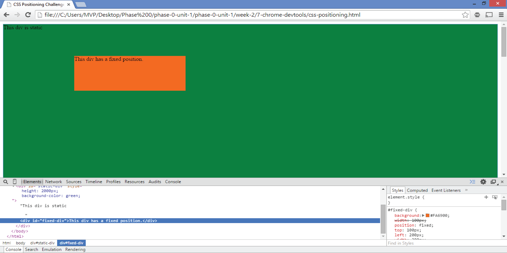
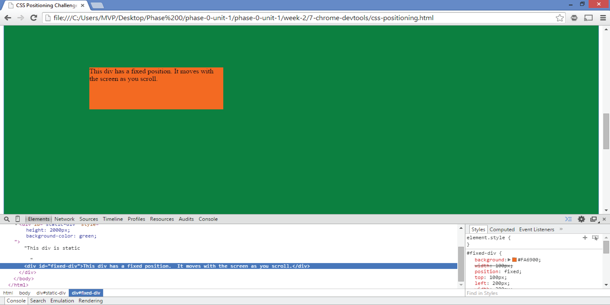

Relative, Absolute, and Fixed Positioning
10/19/2014
Today I'm going to go over the differences of relative, absolute, and fixed positioning. These properties are very useful to designing a website and allow you to position your tags in a couple of different ways. To help with your understanding, think of the elements on a web page as blocks. In other words, a web page is a giant block that contain smaller blocks. With that in mind, lets continue.
Static: This is the default position for every element on a web page. The element will flow into the page in the order you wrote it. You would only set an element to static is you want remove the positioning that carries over from its parent.
Relative: Relative positioning allows you to place a element relative to itself on the page. So if you added the attribute `left: 50px` the element would move right 50px relative to its original position.


Without any other positioning attributes like left, setting an element to relative would have no effect. It would be static. Relative positioning also allows the addition of a z-index, which basically controls the vertical stacking order of elements that overlap.
Absolute: Absolute positioning removes that element from the flow of the page. It has no effect on other elements on the page. If you added the attribute `left 50px` to the element it would move that element relative to the page. If you add the absolute attribute to an element with a parent element that has the relative attribute, the absolute element would be moved relative to the parent element.
Fixed: An element that has a fixed position is shown relative to the browser window. So if you scroll up or down the element will move with the page. This can sometimes be handy in navigation bars.

That is all for now. I hoped you liked my post. Check out this link if you'd like more visuals of the differences.
{kind=link}
{kind=link}
{kind=link}
{kind=link}
{kind=link}